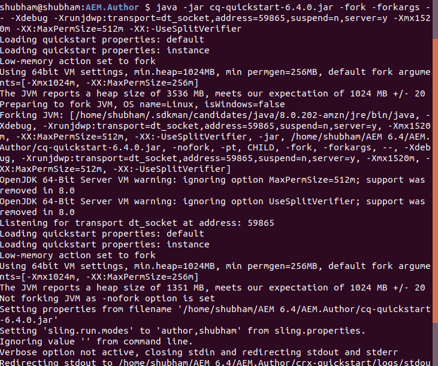
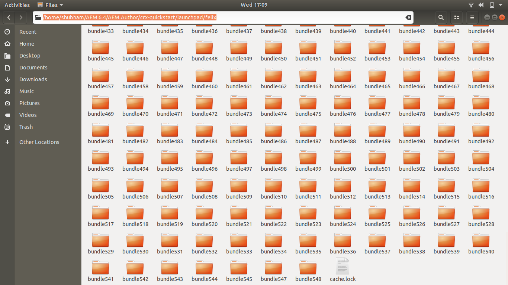
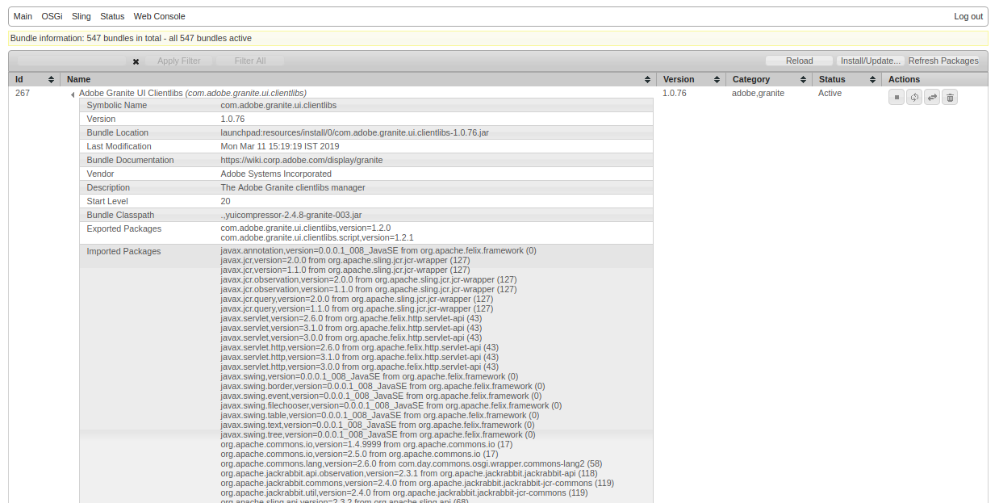
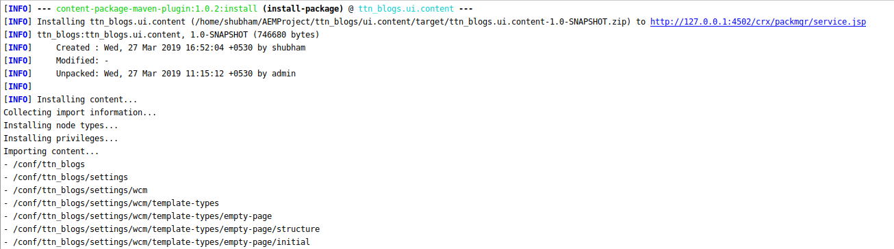

Q1. Open AEM in debug mode.
Solution
java -jar cq-quickstart-6.4.0.jar -fork -forkargs -- -Xdebug -Xrunjdwp:transport=dt_socket,address=59865,suspend=n,server=y -Xmx1520m -XX:MaxPermSize=512m -XX:-UseSplitVerifier

Q2. How to identify if AEM is Publish or Author?
Solution
String runmode=sling.getService(SlingSettingsService.class).getRunModes().toString();
This above method can be used in java to identify the runmode.
<%
pageContext.setAttribute("runModes", sling.getService(SlingSettingsService.class).getRunModes().toString());
%>
Q3. Where are all the bundles installed in AEM resides in system? Search for bundle “com.adobe.granite.ui.clientlibs” and decompile it.
Solution
AEM Bundle Path: /home/shubham/AEM 6.4/AEM.Author/crx-quickstart/launchpad/felix

com.adobe.granite.ui.clientlibs Bundle in AEM, screesnhot image is attached below.

Q4. How can we specify in the command line the ‘port’ and ‘host’ while installing the project.
Solution
mvn clean install -PautoInstallPackage -Daem.host=127.0.0.1 -Daem.port=4502

Q5. Why do we specify SNAPSHOT in the project version?
Solution
A snapshot version in Maven is one that has not been released.
The idea is that before a 1.0 release is done, there exists a 1.0-SNAPSHOT. That version is what might become 1.0. It's basically "1.0 under development".